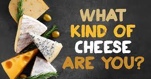

Cheese!
Cheese!
Types of Cheese
There are lots of different kinds of cheese, including soft cheeses and blue cheeses.
The types of Cheese:
- Fresh (No rind)
- Aged fresh (wrinkled white to grey-blue rind)
- Soft white rind (white fuzzy rind)
- Semi-Soft (fine to thick grey-brown rind or orange & sticky)
- Hard (crusty, grey often polished, waxed or oiled)
- Blue (gritty, rough, sometimes sticky rind)
- Flavour added (various)
Some examples of Cheeses:
- Gouda
- Brie
- Cheddar
- Camembert
- Manchego
- Parmesan
- Mozzarella
There are obviously many other cheeses, as many as over 1800! Far too many to list here. Check out this website to see a more definitive list of all of the different cheeses that there are.
Find out what kind of cheese matches your personality with this fun quiz:
People have very varied opinions on cheeses, and many wil have different favourites to others, as well as some that they hate. Some in particular are quite divisive, such as Brie, Camembert and the Blue cheeses. This is usually because they have quite distinctive tastes, and their smells can sometimes make the fridge a bit pongy!
My personal top 5 Cheeses (in order of preference):
- Edam
- Camembert
- Gouda
- Brie
- Danish Blue
There are many different things that you can do to eat cheese, including putting it on crackers, in sandwiches, having it melted on toast, or even just eating it in small chunks if you really want to! My favourite way to eat cheese (specifically Brie or Camembert) is to have it is a nice melty toastie or panini, with some cranberry sauce and maybe a bit of bacon. YUM! There are no rules when it comes to cheese, the only limit is your imagination.